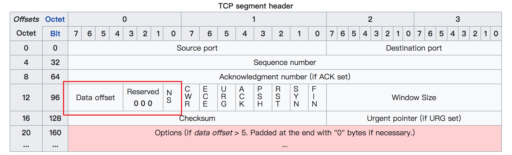

介绍
tcpdump 是一款强大的网络抓包工具，运行在 linux 平台上。熟悉 tcpdump 的使用能够帮助你分析、调试网络数据。
要想使用很好地掌握 tcpdump， 必须对网络报文（TCP/IP 协议）有一定的了解。不过对于简单的使用来说，只要有网络基础概念就行了。
tcpdump 是一个很复杂的命令，想了解它的方方面面非常不易，也不值得推荐，能够使用它解决日常工作中的问题才是关键。
列子
抓取eth0 53端口udp报文：
1 | $ tcpdump –i eth0 udp port 53 –s 0 –w save.pcap –v |
常用选项
设置不解析域名提升速度
-n：不把ip转化成域名，直接显示 ip，避免执行 DNS lookups 的过程，速度会快很多-nn：不把协议和端口号转化成名字，速度也会快很多。
结果输出到文件
-w: 可用于wireshark分析
1 | $ tcpdump icmp -w icmp.pcap |
从文件中读取包数据
-r: 从文件中读取数据
1 | $ tcpdump icmp -r icmp.pcap |
控制详细内容的输出
-v：产生详细的输出. 比如包的TTL，id标识，数据包长度，以及IP包的一些选项。同时它还会打开一些附加的包完整性检测，比如对IP或ICMP包头部的校验和。-vv：产生比-v更详细的输出. 比如NFS回应包中的附加域将会被打印, SMB数据包也会被完全解码。-vvv：产生比-vv更详细的输出。比如 telent 时所使用的SB, SE 选项将会被打印, 如果telnet同时使用的是图形界面，其相应的图形选项将会以16进制的方式打印出来
控制时间的显示
-t：在每行的输出中不输出时间-tt：在每行的输出中会输出时间戳-ttt：输出每两行打印的时间间隔(以毫秒为单位)-tttt：在每行打印的时间戳之前添加日期的打印（此种选项，输出的时间最直观）
显示数据包的头部
-x：以16进制的形式打印每个包的头部数据（但不包括数据链路层的头部）-xx：以16进制的形式打印每个包的头部数据（包括数据链路层的头部）-X：以16进制和 ASCII码形式打印出每个包的数据(但不包括连接层的头部)，这在分析一些新协议的数据包很方便。-XX：以16进制和 ASCII码形式打印出每个包的数据(包括连接层的头部)，这在分析一些新协议的数据包很方便。
过滤指定网卡的数据包
-i：指定要过滤的网卡接口，如果要查看所有网卡，可以 -i any
其他
-q : 简洁地打印输出。即打印很少的协议相关信息, 从而输出行都比较简短.-c : 捕获 count 个包 tcpdump 就退出-s : tcpdump 默认只会截取前 96 字节的内容，要想截取所有的报文内容，可以使用 -s number， number 就是你要截取的报文字节数，如果是 0 的话，表示截取报文全部内容。-S : 使用绝对序列号，而不是相对序列号
常规过滤规则
基于IP地址过滤：host
1 | $ tcpdump host 192.168.10.100 |
数据包的 ip 可以再细分为源ip和目标ip两种
1 | # 根据源ip进行过滤 |
基于网段进行过滤：net
1 | $ tcpdump net 192.168.10.0/24 |
网段同样可以再细分为源网段和目标网段
1 | # 根据源网段进行过滤 |
基于端口进行过滤：port
1 | $ tcpdump port 8088 |
端口同样可以再细分为源端口，目标端口
1 | # 根据源端口进行过滤 |
如果你想要同时指定两个端口你可以这样写
1 | $ tcpdump port 80 or port 8088 |
或者
1 | $ tcpdump port 80 or 8088 |
基于协议进行过滤：proto
常见的网络协议有：tcp, udp, icmp, http, ip,ipv6 等
如何抓取到更精准的包？
例如：只想抓取HTTP 的 POST 请求，则命令如下：
1 | $ tcpdump -s 0 -A -vv 'tcp[((tcp[12:1] & 0xf0) >> 2):4]' |
具体用法如下：tcp[n]：表示 tcp 报文里 第 n 个字节tcp[n:c]：表示 tcp 报文里从第n个字节开始取 c 个字节
例如：tcp[12:1] 表示从报文的第12个字节（因为有第0个字节，所以这里的12其实表示的是13）开始算起取一个字节，也就是 8 个bit。查看 tcp 的报文首部结构，可以得知这 8 个bit 其实就是下图中的红框圈起来的位置，而在这里我们只要前面 4个bit，也就是实际数据在整个报文首部中的偏移量。
&：是位运算里的 and 操作符，比如 0011 & 0010 = 0010>>：是位运算里的右移操作，比如 0111 >> 2 = 00010xf0：是 10 进制的 240 的 16 进制表示，但对于位操作来说，10进制和16进制都将毫无意义，我们需要的是二进制，将其转换成二进制后是：11110000，这个数有什么特点呢？前面个 4bit 全部是 1，后面4个bit全部是0